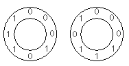

$2^N$ binary digits can be placed in a circle so that all the $N$-digit clockwise subsequences are distinct.
For $N=3$, two such circular arrangements are possible, ignoring rotations:

For the first arrangement, the $3$-digit subsequences, in clockwise order, are:
$000$, $001$, $010$, $101$, $011$, $111$, $110$ and $100$.
Each circular arrangement can be encoded as a number by concatenating the binary digits starting with the subsequence of all zeros as the most significant bits and proceeding clockwise. The two arrangements for $N=3$ are thus represented as $23$ and $29$:
$$\begin{align} 00010111_2 &= 23\\ 00011101_2 &= 29 \end{align}$$Calling $S(N)$ the sum of the unique numeric representations, we can see that $S(3) = 23 + 29 = 52$.
Find $S(5)$.
solve(n=3) → ?solve(n=5) → ?solve(n=4) → ?